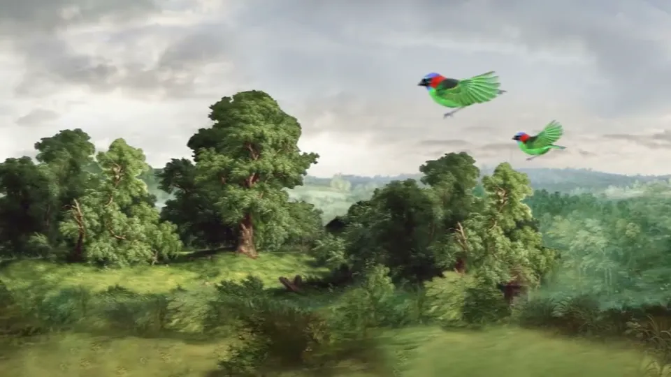
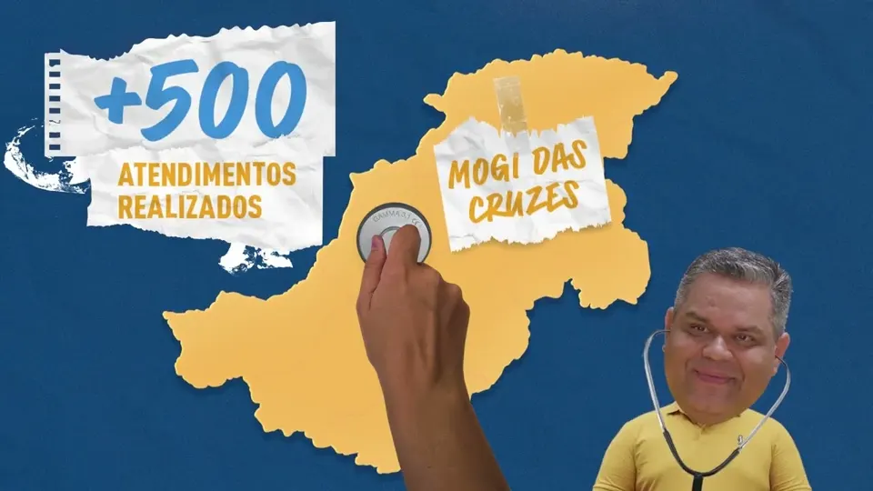
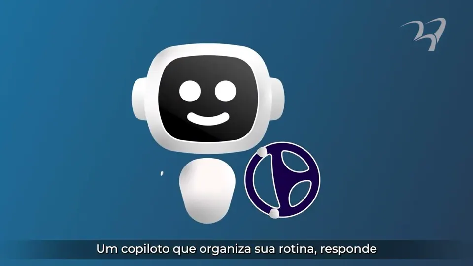
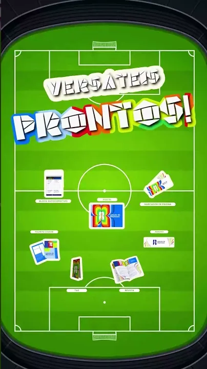
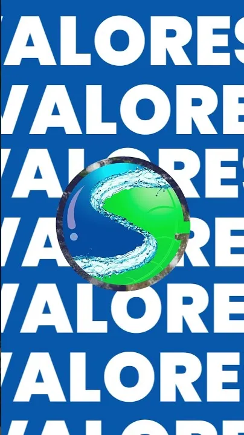
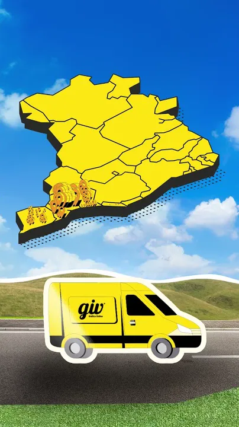
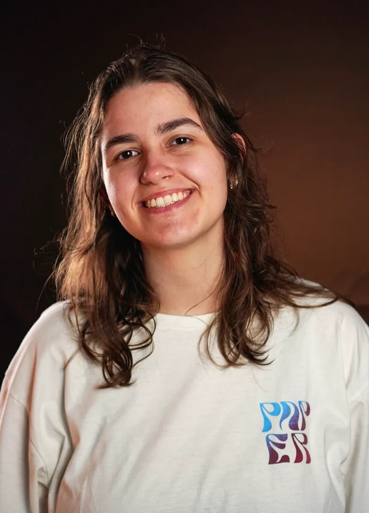

BarbaraCamarotti
Motion Designer
Editora de Vídeo
Gestora Audiovisual
Histórias visuais dinâmicas, identidades de marca e motion graphics de alto impacto — da TV aberta ao e-commerce 3D.
Baixar currículoTrabalhos selecionados
3D & e-commerce · GIV Online · 2026
A luz vende o acabamento. Arraste e compare.
Foto estática não mostra o brilho do hot stamping nem o contraste do verniz. Criei no Blender simulações de 10 acabamentos com a mesma peça, câmera e rotação, para a diferença vir só do material.
Escolha um lado e toque em um acabamento para trocar.
Como foi feito
Outros trabalhos
Motion em foco
Recorte, personagem e marca em movimento.
Peças em que a animação é a própria ideia, e não um acabamento.

Animação · História
Ilha Anchieta
Quadros com textura de pintura ganham vida para contar a história do lugar.

Colagem · Pré-campanha
Zé Luiz — Presente nos Bairros
Papel, fotografia e tipografia cinética em 36 segundos.

Explainer 2D · Personagem
Copilot em 1min36
Ilustração, rigging e animação para descomplicar um tema técnico.

Vertical · Copa
Seleção de Impressos

Marca · Vertical
G&S

Vertical · 26 s
Novos Pontos de Retirada
Arquivo Mais trabalhos no BehanceHistórias de ganhadores · Hiper Cap Brasil
Nove ganhadores, nove vidas diferentes.
Reportagens gravadas com quem ganhou, na cidade de cada um. A edição dá espaço para a emoção de cada família, e os grafismos ajudam a contar quem é, de onde vem e o que mudou.
Montagem & documentário
Do corte de 31 segundos ao filme de 19 minutos.

02 Sobre
Da visão artística à coordenação de quem faz acontecer.
Sou Motion Designer e Editora de Vídeo há mais de 4 anos, do comercial de TV aberta à visualização 3D de produtos para e-commerce.
Hoje atuo como Editora de Vídeo & Gestora de Audiovisual na FuturaIM: lidero a equipe, faço o controle de qualidade e a aprovação dos materiais, dirijo gravações com câmera e gimbal e desenvolvo as visualizações 3D de enobrecimentos no Blender.
Antes, na agência Inspira, criei o motion de campanhas para Vivo, Caixa Econômica e Hiper Cap Brasil, incluindo comerciais nacionais com Fernanda Gentil e Ciro Bottini.
Disponível para projetos freelance e conversas sobre novas oportunidades, remoto ou presencial.
- After Effects
- Premiere Pro
- DaVinci Resolve
- Blender
- Photoshop
- Illustrator
- Midjourney
- Higgsfield
- Câmera & gimbal
03 Currículo
Trajetória
-
Mai 2026 — atual
Editora de Vídeo & Gestora de Audiovisual
FuturaIM
Gestão da equipe de audiovisual, prazos e aprovação de materiais. Manutenção da identidade visual da marca. Direção em gravações e operação de câmera e gimbal. Visualizações 3D de enobrecimentos no Blender integradas ao e-commerce.
-
Set 2023 — Abr 2026
Motion Designer
Inspira Comunicação Integrada
Contas Vivo, Caixa Econômica e Hiper Cap Brasil. Mais de 1 milhão de visualizações em campanhas e ritmo de 25 peças semanais. Comerciais nacionais com Fernanda Gentil e Ciro Bottini, vinhetas e cartelas para os telões de LED da Jovem Pan ao vivo.
-
Mai 2023 — Jul 2023
Motion Designer Jr.
Sua Produtora
Criação e animação de campanhas comerciais veiculadas em redes nacionais (Band, RedeTV! e NGT).
-
Abr 2022 — Mai 2023
Estágio em Design & Motion
Win 10 Marketing
Produção visual para redes sociais, captação externa com clientes e edição de diferentes formatos.
-
Freelance contínuo
Videomaker & Motion Designer
Projetos culturais e independentes
Montagem e motion de documentários pela Lei Paulo Gustavo com a Prefeitura de Salesópolis. Série de animações para a Fiocruz.
Motion & edição
- After Effects (avançado)
- Premiere Pro (avançado)
- DaVinci Resolve (cor e edição)
- Tipografia cinética e logo reveal
Design & 3D
- Blender (modelagem, materiais e luz)
- Photoshop e Illustrator
- Simulação de enobrecimentos gráficos
- Visualização de produto para e-commerce
Gestão & direção
- Gestão de equipe e prazos
- Controle de qualidade e aprovação
- Direção em set, câmera e gimbal
- Manutenção de identidade de marca
IA & formação
- Higgsfield, Midjourney e Rabbits AI
- Design de Animação — Anhembi Morumbi
- Comunicação Visual — SENAI Theobaldo de Nigris
- Certificações em VFX, DaVinci Resolve e IA Experience